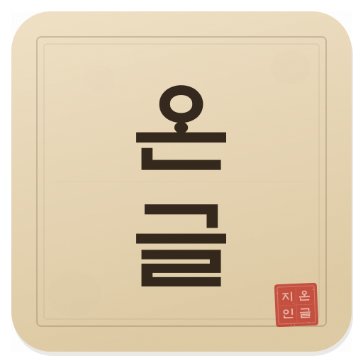
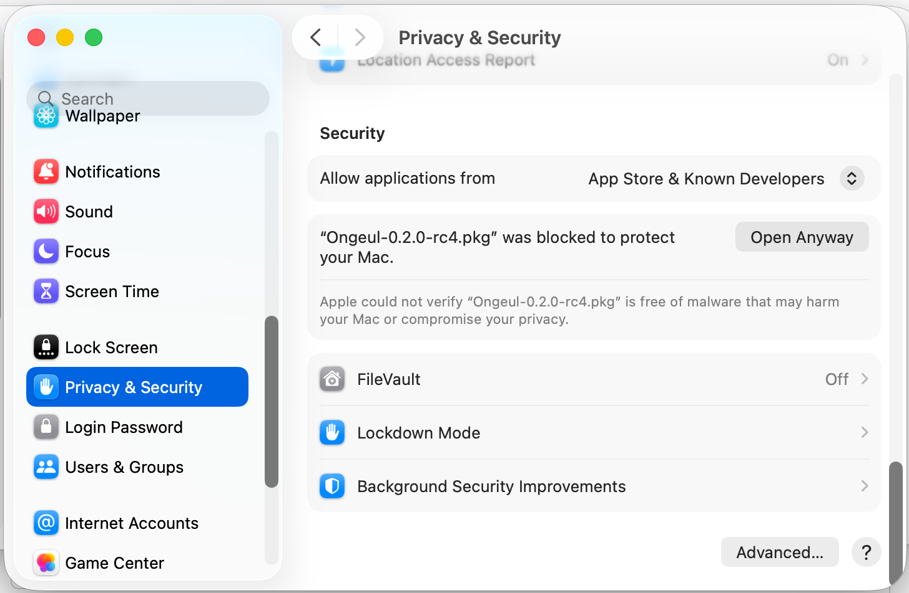
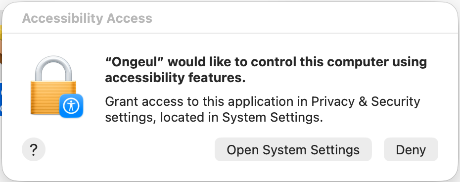
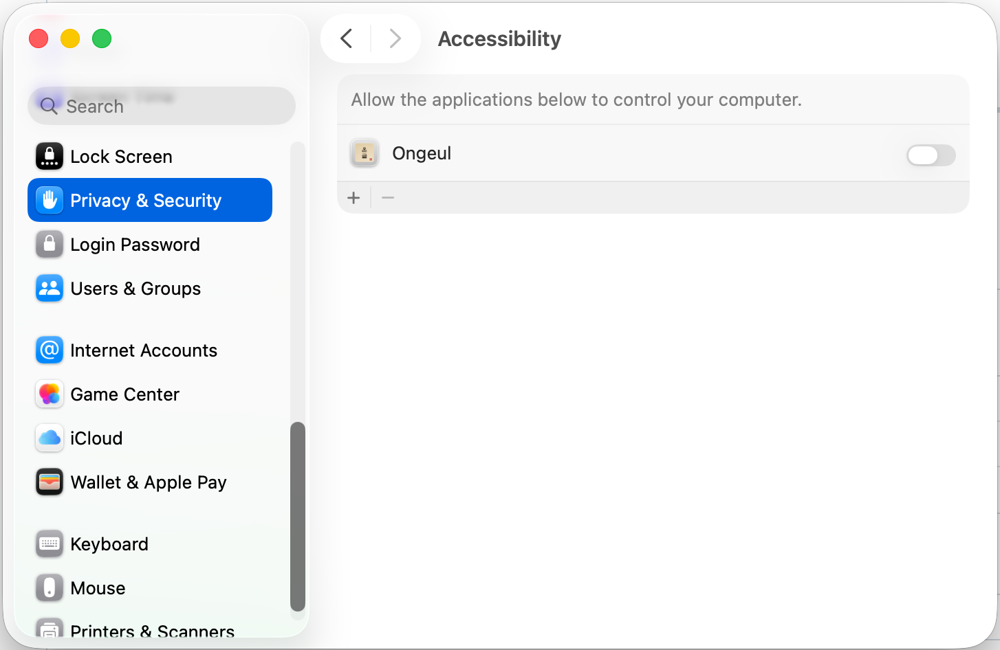

Ongeul (온글)

macOS용 한글 입력기 — 하나의 입력 소스로 한글과 영문을 모두 처리합니다.
Ongeul이란?
macOS 기본 한글 입력기는 한/영 전환 시 입력 소스를 전환합니다. 이 과정에서 InputMethodKit의 세션 간섭 버그로 인해 글자가 씹히거나 지연이 발생할 수 있습니다.
Ongeul은 단일 입력 소스 안에서 한글과 영문을 모두 처리하여 이 문제를 근본적으로 해결합니다.
기존 입력기와의 차이점
| 기존 입력기 | Ongeul | |
|---|---|---|
| 영문 입력 | 시스템에 위임 (ABC 전환) | 엔진이 직접 입력 |
| 등록된 입력 소스 | 2개 (한글 + ABC) | 1개 (Ongeul만) |
| 한/영 전환 | macOS 입력 소스 전환 | 내부 모드 전환 |
| 세션 간섭 | 발생 가능 | 원천 차단 |
주요 특징
- 세 가지 키보드 레이아웃 — 두벌식 표준, 세벌식 390, 세벌식 최종
- 유연한 한/영 전환 — 오른쪽 Command, Option, Shift 단독, Shift + Space, CapsLock
- 모드 인디케이터 — 커서 근처에 현재 모드 표시
- 앱별 모드 기억 — 앱마다 마지막 입력 모드 자동 복원
- 영문 잠금 — 특정 앱을 영문 전용으로 고정
- 입력기 고정 — 다른 입력 소스로의 자동 전환 방지
- 자동 업데이트 확인 — 새 버전 출시 시 알림
시작하기
Ongeul을 사용하려면 설치 페이지를 참고하세요.
개발에 참여하려면 빌드 페이지를 참고하세요.
설치
.pkg 설치 (권장)
- GitHub Releases 페이지에서 최신
.pkg파일을 다운로드합니다. - 다운로드한
.pkg파일을 더블클릭합니다. - Installer의 안내에 따라 설치합니다.
- 시스템 전체 설치:
/Library/Input Methods에 설치됩니다 (관리자 권한 필요). - 현재 사용자만:
~/Library/Input Methods에 설치됩니다.
- 시스템 전체 설치:
실행 권한 (Gatekeeper)
Ongeul은 오픈소스 프로젝트로, Apple Developer 인증서로 서명되거나 공증(notarization)되어 있지 않습니다. 이 때문에 macOS Gatekeeper가 설치 파일과 앱 실행을 차단합니다. 이는 보안 위협이 아니라 Apple 개발자 프로그램에 등록되지 않은 소프트웨어에 대한 macOS의 기본 정책입니다.
.pkg 파일 열기
다운로드한 .pkg 파일을 더블클릭하면 다음과 같은 경고가 표시될 수 있습니다.

- 경고 다이얼로그에서 완료 를 클릭합니다.
- 시스템 설정 → 개인 정보 보호 및 보안 으로 이동합니다.
- 하단의 보안 섹션에서 "Ongeul-x.x.x.pkg이(가) Mac을 보호하기 위해 차단되었습니다" 메시지를 확인하고 확인 없이 열기 를 클릭합니다.

- macOS가 다시 확인을 요청하면 열기 를 클릭합니다.
Ongeul은 공증(notarization)되어 있지 않으므로, 업데이트할 때마다 이 과정이 필요합니다.
입력기 등록
.pkg 설치가 완료되면, macOS에 Ongeul을 입력 소스로 등록해야 합니다. 등록하지 않으면 Ongeul이 설치되어 있어도 입력기로 사용할 수 없습니다.
최초 설치 시 macOS가 새 입력기를 인식하려면 로그아웃 후 재로그인이 필요할 수 있습니다. 입력 소스 목록에 Ongeul이 보이지 않는다면 로그아웃 후 다시 시도하세요.
- 메뉴 막대 우측의 입력기 아이콘 을 클릭합니다.
- 드롭다운 메뉴 하단의 "Open Keyboard Settings..." 를 선택합니다.

- 현재 설정된 입력 소스 목록이 표시됩니다. 좌측 하단의 + 버튼을 클릭합니다.

- 왼쪽 언어 목록에서 한국어 를 선택합니다.
- 오른쪽에 나타나는 입력기 목록에서 Ongeul 을 선택하고 추가 를 클릭합니다.

기존 입력 소스 정리
Ongeul은 한글과 영문을 모두 하나의 입력기에서 처리하므로, 기존 한글 입력기(예: 2-Set Korean)는 제거하는 것을 권장합니다.
- 입력 소스 목록에서 기존 한글 입력기를 선택하고 − 버튼으로 제거합니다.
ABC 입력 소스는 macOS 기본 입력기로 삭제할 수 없습니다. Ongeul이 영문 입력도 처리하므로 ABC가 남아 있어도 무방합니다.
기존 한글 입력기를 제거하고 Ongeul만 사용하면 입력 소스 전환으로 인한 지연이 크게 줄어듭니다. 자세한 설정은 시작하기 페이지를 참고하세요.
손쉬운 사용(Accessibility) 권한
Ongeul은 손쉬운 사용(Accessibility) 권한이 필요합니다. 이 권한이 부여되면 Ongeul이 시스템 레벨에서 키 이벤트를 가로채어(CGEventTap) 모든 앱에서 안정적으로 동작합니다.
왜 필요한가요?
macOS의 입력기 프레임워크(InputMethodKit)만으로는 해결할 수 없는 앱별 호환성 문제들이 있습니다. Accessibility 권한이 부여되면 Ongeul이 시스템 레벨(CGEventTap)에서 키 이벤트를 직접 처리하여 이러한 문제를 해결합니다.
- 토큰 필드 조합 글자 중복: 메시지 앱의 "받는 사람" 입력창 등 토큰 필드(NSTokenField)에서 한글 조합 중 Enter를 누르면 마지막 조합 글자가 중복 입력되는 macOS 버그가 있습니다. 예를 들어 "홍길동"을 입력하고 Enter를 누르면 토큰
[홍길동]옆에 "동"이 추가로 나타납니다. Accessibility 권한이 있으면 텍스트 확정과 Enter 키 전달을 별도 이벤트 사이클로 분리하여 이 문제를 방지합니다. - Shift+Space 한/영 전환 시 공백 삽입: JetBrains IDE(RustRover, IntelliJ, WebStorm 등), iTerm2 등 일부 앱은 자체적인 키 입력 처리를 구현하여 입력기의 키 처리 결과를 무시합니다. 이로 인해 Shift+Space로 한/영 전환 시 공백 문자가 함께 삽입됩니다. Accessibility 권한이 있으면 키 이벤트가 앱에 도달하기 전에 시스템 레벨에서 가로채므로 이 문제가 발생하지 않습니다.
권한이 없어도 기본적인 한글 입력과 오른쪽 Command 전환은 정상 동작합니다. 위 문제들이 발생하는 특정 앱에서만 차이가 있으며, 해당 상황에서는 기존 방식으로 폴백하여 동작합니다.
권한 설정 방법
Ongeul을 입력 소스로 등록하고 처음 활성화하면, 다음과 같은 Accessibility 권한 요청 다이얼로그가 자동으로 표시됩니다.

- 다이얼로그에서 "Open System Settings" 를 클릭합니다.
- 손쉬운 사용 설정 화면이 열리면 목록에서 Ongeul 을 찾아 토글을 켭니다.

다이얼로그가 표시되지 않는 경우:
- 시스템 설정 을 엽니다.
- 개인 정보 보호 및 보안 → 손쉬운 사용 을 선택합니다.
- 목록에서 Ongeul 을 찾아 토글을 켭니다.
- 목록에 Ongeul이 보이지 않는 경우, 하단의 + 버튼을 클릭하고
/Library/Input Methods/Ongeul.app(시스템 전체 설치) 또는~/Library/Input Methods/Ongeul.app(현재 사용자 설치)을 선택합니다.
업데이트 시 참고: Ongeul을 업데이트하면 앱이 재서명되어 기존 Accessibility 권한이 자동으로 초기화됩니다. 업데이트 후 Ongeul을 처음 활성화하면 권한 요청 다이얼로그가 다시 표시되므로, 위 절차에 따라 권한을 다시 부여해 주세요.
소스에서 빌드
개발 환경에서 직접 빌드하려면 빌드 페이지를 참고하세요.
# 빌드 + 설치
./scripts/install.sh
요구사항
- macOS 14.0 (Sonoma) 이상
- Apple Silicon (aarch64) 또는 Intel (x86_64)
시작하기
설치가 완료되면 다음 단계를 따라 Ongeul을 활성화하세요.
1. 로그아웃/로그인
최초 설치 시 macOS가 새 입력기를 인식하려면 로그아웃 후 재로그인이 필요합니다.
macOS는 입력기 목록을 로그인 시점에 캐시합니다. 로그아웃하지 않으면 Ongeul이 입력 소스 목록에 나타나지 않습니다.
2. 입력 소스 추가
- 시스템 설정 → 키보드 → 입력 소스 → 편집... 을 클릭합니다.
- 좌측 하단의 + 버튼을 클릭합니다.
- 목록에서 Ongeul 을 찾아 추가합니다.
3. 기존 입력 소스 정리
Ongeul은 한글과 영문을 모두 처리하므로, 기존 한글 입력기는 제거합니다. 영문 입력 소스(ABC 등)는 제거해도 되고 남겨둬도 됩니다.
- 입력 소스 목록에서 기존 한글 입력기를 선택하고 − 버튼으로 제거합니다.
ABC 입력 소스는 macOS 기본 입력기로 삭제할 수 없습니다. Ongeul이 영문 입력도 처리하므로 ABC가 남아 있어도 무방합니다. ABC가 남아 있는 경우에는 macOS 입력 소스 전환 단축키로 전환하여 사용할 수 있습니다.
4. CapsLock 전환 비활성화 (ABC를 남긴 경우)
ABC 등 다른 입력 소스를 남겨둔 경우, CapsLock 관련 옵션을 비활성화하세요.
- 시스템 설정 → 키보드 로 이동합니다.
- "Caps Lock으로 ABC 입력 소스 전환" 옵션을 끕니다.
이 옵션이 켜져 있으면 CapsLock을 누를 때 Ongeul에서 ABC로 전환되어 버립니다. Ongeul만 사용하는 경우에는 전환 대상이 없으므로 이 설정을 신경 쓸 필요가 없습니다.
5. 손쉬운 사용 권한 확인
Ongeul은 시스템 레벨 키 입력 처리를 위해 손쉬운 사용(Accessibility) 권한이 필요합니다. 설치 시 권한 안내가 표시되지만, 아직 설정하지 않았다면 아래 단계를 따르세요.
- 시스템 설정 → 개인 정보 보호 및 보안 → 손쉬운 사용 을 엽니다.
- 목록에서 Ongeul 을 찾아 활성화합니다.
이 권한이 없으면 Shift+Space 전환 키가 정상 동작하지 않을 수 있습니다. 자세한 내용은 설치 > 손쉬운 사용 권한을 참고하세요.
6. 첫 입력 테스트
- 아무 텍스트 편집기를 엽니다.
- 한글을 입력해 봅니다 — 기본 모드는 영문이므로, 오른쪽 Command 를 눌러 한글 모드로 전환합니다.
- 커서 근처에 한 인디케이터가 나타나면 정상입니다.
- 한글을 입력하고, 다시 오른쪽 Command를 눌러 영문 모드로 전환합니다.
기능
Ongeul의 주요 기능을 소개합니다.
- 키보드 레이아웃 — 두벌식 표준, 세벌식 390, 세벌식 최종
- 한/영 전환 — 오른쪽 Command, Option, Shift 단독, Shift + Space, CapsLock
- 모드 인디케이터 — 커서 근처에 현재 모드 표시
- 앱별 모드 기억 — 앱마다 마지막 입력 모드 자동 복원
- 영문 잠금 — 특정 앱을 영문 전용으로 고정
- CapsLock — 한/영 전환 키 또는 CapsLock 정규화
- 입력기 고정 — 다른 입력 소스로의 자동 전환 방지
키보드 레이아웃
Ongeul은 세 가지 한글 키보드 레이아웃을 지원합니다. 설정에서 원하는 레이아웃을 선택할 수 있습니다.
두벌식 표준
가장 널리 사용되는 한글 키보드 배열입니다.

- 자음과 모음 두 벌로 구성
- 왼손 자음, 오른손 모음 배치
- Shift로 쌍자음 입력 (ㄱ → ㄲ, ㄷ → ㄸ 등)
- 겹받침 자동 조합: ㄱ+ㅅ=ㄳ, ㄹ+ㄱ=ㄺ 등
- 겹모음 자동 조합: ㅗ+ㅏ=ㅘ, ㅜ+ㅓ=ㅝ 등
- 종성 뒤 모음 입력 시 자동 분리: 간+ㅕ → 가+녀
조합 과정
두벌식은 6단계 상태 머신으로 한글을 조합합니다.
- 초성 입력
- 중성 입력
- 겹중성 입력 (해당 시)
- 종성 입력
- 겹종성 입력 (해당 시)
- 다음 음절로 이동 (종성 분리 포함)
백스페이스를 누르면 조합 단계가 하나씩 취소됩니다.
세벌식 390
초성, 중성, 종성을 각각 다른 키에 배치한 세벌식 자판입니다.

- 초성(왼쪽), 중성(오른쪽), 종성(왼쪽 아래) 분리 배치
- 숫자열에 특수 문자 리매핑
- Shift 없이 대부분의 한글 입력 가능
세벌식 최종
세벌식 최종 자판은 390 배열을 더 세밀하게 조정한 배열입니다.

- 390과 유사한 초/중/종 분리 배치
- 추가 특수 기호 및 인용부호 지원
- 숫자열 배치 차이
레이아웃 정의
모든 레이아웃은 JSON5 형식으로 정의되어 있어 구조를 확인하거나 기존 레이아웃의 키 배치를 편집할 수 있습니다.
레이아웃 파일 위치: ongeul-automata/layouts/
2-standard.json5— 두벌식 표준3-390.json5— 세벌식 3903-final.json5— 세벌식 최종
새로운 자판 레이아웃의 추가를 원하시면 GitHub Issues에 등록해 주세요.
한/영 전환
Ongeul은 다양한 한/영 전환 방식을 지원합니다. 설정에서 원하는 방식을 선택할 수 있습니다.
오른쪽 Command (기본값)
- 오른쪽 Command 키를 단독으로 누른 뒤 떼면 한/영이 전환됩니다.
- 다른 키와 함께 누르면 (예: Cmd+C) 전환되지 않고 일반 Command 키로 동작합니다.
- 500ms 이내에 떼야 전환됩니다. 오래 누르고 있으면 전환되지 않습니다.
오른쪽 Option
- 오른쪽 Option 키를 단독으로 누른 뒤 떼면 한/영이 전환됩니다.
- 한국어 키보드의 한/영 키 위치와 동일합니다.
왼쪽 / 오른쪽 Shift (단독)
- Shift 키를 다른 키 없이 단독으로 누른 뒤 떼면 한/영이 전환됩니다.
- 대문자 입력 등 다른 키와 함께 누르면 전환되지 않습니다.
- RIME 입력기에서 사용하는 방식입니다.
Shift + Space
- Shift 를 누른 상태에서 Space 를 누르면 한/영이 전환됩니다.
- 전통적인 한/영 전환 방식을 선호하는 사용자를 위한 옵션입니다.
Shift+Space를 전환 키로 사용하려면 손쉬운 사용(Accessibility) 권한이 필요합니다. 권한이 부여되면 Ongeul이 시스템 레벨에서 Shift+Space를 가로채어, JetBrains IDE나 iTerm2 등에서 공백이 함께 입력되는 문제 없이 모든 앱에서 정상 동작합니다.
손쉬운 사용 권한은 설치 시 자동으로 안내됩니다. 권한 설정 방법은 설치를 참고하세요.
CapsLock
- CapsLock 키를 누를 때마다 한/영이 전환됩니다.
- CapsLock LED는 항상 꺼진 상태로 유지되며, 대문자 잠금 기능은 비활성화됩니다.
- CapsLock을 전환 키로 사용하려면 시스템 설정에서 CapsLock 지연을 비활성화해야 합니다. 자세한 내용은 CapsLock을 참고하세요.
ESC 키로 영문 전환
- ESC 키를 누르면 자동으로 영문 모드로 전환됩니다.
- Vim 사용자를 위한 편의 기능으로, Normal 모드 진입 시 별도로 한/영 전환을 하지 않아도 됩니다.
- 설정에서 이 기능을 켜거나 끌 수 있습니다. 기본값은 꺼짐입니다.
전환 키 변경
설정에서 전환 키 항목을 변경할 수 있습니다.
동작 방식
한/영 전환은 macOS 입력 소스 전환이 아닌 Ongeul 내부 모드 전환입니다.
- 입력 소스가 변경되지 않으므로 InputMethodKit의 세션 간섭이 발생하지 않습니다.
- 전환 시 커서 근처에 모드 인디케이터가 표시됩니다.
- 모든 modifier 기반 전환 키는 500ms 타임아웃이 적용됩니다.
모드 인디케이터
한/영 전환 시 커서 근처에 현재 모드를 표시하는 인디케이터가 나타납니다.
표시 방식
- 한글 모드: 강조 색상 배경에 한 표시
- 영문 모드: A 표시
- 1.6초 후 자동으로 사라집니다.
위치
인디케이터는 현재 텍스트 커서 위치 근처에 표시됩니다. 앱이 커서 위치 정보를 제공하지 않는 경우에는 화면 중앙 하단에 표시됩니다.
설정
메뉴 막대의 온글 아이콘 → 설정에서 모드 인디케이터를 켜거나 끌 수 있습니다. 인디케이터가 불필요하거나 시야에 방해가 되는 경우 비활성화할 수 있습니다.
앱별 모드 기억
Ongeul은 앱마다 마지막으로 사용한 입력 모드를 기억합니다.
동작 방식
- 브라우저에서 한글을 쓰다가 터미널로 전환하면, 터미널에서 마지막으로 사용한 모드가 자동으로 복원됩니다.
- 다시 브라우저로 돌아오면 한글 모드가 복원됩니다.
- 이전에 사용한 적이 없는 앱은 기본적으로 영문 모드로 시작합니다.
기억 범위
- 앱 단위(Bundle ID 기준)로 모드를 저장합니다.
- 메모리에만 저장되므로, Ongeul을 재시작하면 초기화됩니다.
영문 잠금
특정 앱에서 한/영 전환을 막고 영문 전용으로 고정할 수 있습니다.
잠금/해제 방법
4키 동시 입력으로 영문 잠금을 토글합니다:
- 좌측 Option + 좌측 Command + 우측 Command + 우측 Option
네 키를 모두 누르고 있으면 잠금이 토글됩니다.
잠금 상태 표시
- 잠금이 활성화되면 화면 중앙에 잠금 아이콘이 잠시 표시됩니다.
- 해제 시에는 잠금 해제 아이콘이 표시됩니다.
지속성
- 영문 잠금 상태는 UserDefaults에 저장되어 앱 재시작 후에도 유지됩니다.
- 앱별(Bundle ID 기준)로 독립적으로 관리됩니다.
사용 예시
터미널·코드 편집기
주로 영문만 사용하는 앱에서 유용합니다. 영문 잠금을 설정하면 실수로 한글 모드로 전환되는 것을 방지할 수 있습니다.
원격 데스크톱 (Remote Desktop)
Microsoft Remote Desktop 등 원격 데스크톱 앱에서 특히 유용합니다. 원격 환경에 macOS와 동일한 한/영 전환 키가 설정되어 있는 경우, 온글의 한/영 전환이 먼저 동작하여 원격 환경의 한/영 전환이 정상적으로 작동하지 않는 문제가 발생할 수 있습니다.
영문 잠금을 활성화하면 온글이 한/영 전환 키를 가로채지 않으므로, 해당 키가 원격 환경으로 그대로 전달되어 원격 환경의 한/영 전환이 정상적으로 동작합니다.
CapsLock
Ongeul은 CapsLock을 한/영 전환 키로 사용하거나, CapsLock 상태를 무시하는 정규화 기능을 제공합니다.
CapsLock으로 한/영 전환
설정에서 전환 키를 CapsLock으로 선택하면, CapsLock 키로 한/영을 전환할 수 있습니다.
동작 방식
- CapsLock을 누를 때마다 한글/영문 모드가 전환됩니다.
- CapsLock LED는 항상 꺼진 상태로 유지됩니다. 대문자 잠금 기능은 비활성화됩니다.
- 영문 잠금 상태에서는 CapsLock이 기존 대문자 잠금으로 동작합니다.
사전 설정
시스템 설정 → 키보드에서 다음을 확인하세요:
- CapsLock 지연 비활성화 — CapsLock 입력 지연을 끄세요. 지연이 활성화되어 있으면 CapsLock을 빠르게 누를 때 전환이 무시될 수 있습니다.
- "Caps Lock으로 ABC 입력 소스 전환" 옵션 비활성화 — 이 옵션이 켜져 있으면 CapsLock을 누를 때 Ongeul에서 ABC로 전환되어 버립니다.
CapsLock 정규화
CapsLock을 전환 키로 사용하지 않는 경우에도, Ongeul은 CapsLock 상태에 관계없이 일관된 입력을 제공합니다.
- 한글 모드: CapsLock이 켜져 있어도 정상적으로 한글이 입력됩니다. CapsLock 상태를 무시합니다.
- 영문 모드: CapsLock이 켜져 있으면 기존 대문자 동작이 그대로 유지됩니다.
CapsLock + Shift
- 한글 모드에서 CapsLock + Shift 조합은 쌍자음 등 Shift 본래의 동작을 유지합니다.
- 영문 모드에서 CapsLock + Shift 조합은 소문자를 입력합니다 (macOS 기본 동작과 동일).
입력기 고정
macOS에서는 특정 상황에서 입력 소스가 자동으로 ABC 등 다른 키보드 레이아웃으로 전환될 수 있습니다. 입력기 고정 기능을 활성화하면 Ongeul이 자동으로 다시 선택되어, 의도치 않은 입력 소스 전환을 방지합니다.
활성화 방법
설정에서 "입력기 고정" 체크박스를 켜세요. 기본값은 꺼짐입니다.
동작 방식
- macOS 입력 소스 변경 알림을 감시합니다.
- ABC, U.S. 등 키보드 레이아웃으로 전환이 감지되면 자동으로 Ongeul로 복원합니다.
- 일본어, 중국어 등 **다른 입력기(IME)**로의 전환은 허용합니다. 의도적으로 다른 입력기를 선택한 경우에는 간섭하지 않습니다.
- 비밀번호 입력 필드(보안 입력)에서는 잠금이 비활성화됩니다.
사용 예시
- macOS 업데이트나 특정 앱이 입력 소스를 임의로 ABC로 전환하는 경우
- ABC 입력 소스를 제거할 수 없는 환경에서 Ongeul만 사용하고 싶은 경우
설정
Ongeul의 설정은 메뉴 막대에서 접근할 수 있습니다.
설정 열기
- 메뉴 막대의 Ongeul 아이콘을 클릭합니다.
- 설정(Preference) 을 선택합니다.
설정 항목
전환 키
한/영 전환에 사용할 키를 선택합니다.
- 오른쪽 Command (기본값) — 단독으로 누른 뒤 떼면 전환
- 오른쪽 Option — 한국어 키보드의 한/영 키 위치
- 왼쪽 Shift (단독) — 다른 키 없이 단독으로 눌렀다 떼면 전환 (RIME 방식)
- 오른쪽 Shift (단독) — 다른 키 없이 단독으로 눌렀다 떼면 전환
- Shift + Space — 전통적인 전환 방식
- CapsLock — CapsLock 키로 전환 (LED는 항상 꺼짐)
모든 modifier 기반 전환 키는 500ms 이내에 떼야 전환됩니다.
Shift + Space 를 사용하려면 손쉬운 사용(Accessibility) 권한이 필요합니다. 이 권한은 설치 시 자동으로 안내됩니다. 자세한 내용은 설치 > 손쉬운 사용 권한 및 한/영 전환 > Shift + Space를 참고하세요.
CapsLock 을 전환 키로 사용하려면 시스템 설정에서 CapsLock 지연을 비활성화해야 합니다. 자세한 내용은 CapsLock > 사전 설정을 참고하세요.
키보드 레이아웃
한글 키보드 레이아웃을 선택합니다.
- 두벌식 표준 — 가장 널리 사용되는 배열
- 세벌식 390 — 초/중/종 분리 배치, 숫자열 리매핑
- 세벌식 최종 — 세벌식 최종 자판
레이아웃을 변경하면 즉시 적용됩니다.
ESC 키로 영문 전환
ESC 키(또는 Ctrl+[)를 누르면 자동으로 영문 모드로 전환합니다. Vim 사용자를 위한 편의 기능입니다. 기본값은 꺼짐입니다.
모드 인디케이터 표시
한/영 전환 시 커서 근처에 현재 모드를 표시합니다. 자세한 내용은 모드 인디케이터를 참고하세요.
입력기 고정
다른 입력 소스(ABC 등)로의 자동 전환을 방지합니다. 기본값은 꺼짐입니다. 자세한 내용은 입력기 고정을 참고하세요.
업데이트 확인
메뉴 막대의 Ongeul 아이콘에서 "업데이트 확인..." 을 선택하면 최신 버전이 있는지 확인할 수 있습니다.
- 새 버전이 있으면 다운로드 페이지로 이동하는 안내가 표시됩니다.
- Ongeul은 시작 시 자동으로 업데이트를 확인합니다 (24시간 간격).
문제 해결
입력기 목록에 Ongeul이 보이지 않음
원인: macOS는 입력기 목록을 로그인 시점에 캐시합니다.
해결: 로그아웃 후 재로그인하세요. 설치 직후에는 반드시 이 과정이 필요합니다.
Gatekeeper가 .pkg 또는 앱 실행을 차단함
원인: Ongeul은 오픈소스 프로젝트로 Apple Developer 인증서로 서명되어 있지 않아, macOS Gatekeeper가 .pkg 설치 파일이나 앱 실행을 차단합니다.
해결:
- 경고 다이얼로그에서 완료 를 클릭합니다.
- 시스템 설정 → 개인 정보 보호 및 보안 으로 이동합니다.
- 하단 보안 섹션에서 차단 메시지를 확인하고 확인 없이 열기 를 클릭합니다.
자세한 내용은 설치 > 실행 권한을 참고하세요.
한글 조합이 되지 않음
다음 사항을 확인하세요:
- 현재 입력 모드가 한글 모드인지 확인합니다 (오른쪽 Command로 전환).
- 메뉴 막대의 아이콘이 한글 모드 아이콘으로 표시되는지 확인합니다.
- 해당 앱에 영문 잠금이 설정되어 있지 않은지 확인합니다.
Shift+Space 전환 시 공백이 입력됨
원인: iTerm2, JetBrains IDE(RustRover, IntelliJ, WebStorm 등) 등 일부 앱은 입력기의 키 처리 결과를 무시하여 Shift+Space 전환 시 공백 문자를 함께 삽입합니다.
해결: 손쉬운 사용(Accessibility) 권한이 부여되어 있는지 확인하세요. 이 권한이 부여되면 Ongeul이 시스템 레벨에서 Shift+Space를 가로채므로 모든 앱에서 공백 없이 전환됩니다.
- 시스템 설정 → 개인 정보 보호 및 보안 → 손쉬운 사용 을 엽니다.
- 목록에서 Ongeul 이 활성화되어 있는지 확인합니다.
손쉬운 사용 권한은 설치 시 자동으로 안내됩니다. 자세한 내용은 설치 > 손쉬운 사용 권한을 참고하세요.
CapsLock 전환이 느리거나 무시됨
원인: macOS의 CapsLock 지연 기능이 활성화되어 있으면 CapsLock을 빠르게 누를 때 입력이 무시될 수 있습니다.
해결: 시스템 설정 → 키보드에서 CapsLock 지연을 비활성화하세요. 자세한 내용은 CapsLock > 사전 설정을 참고하세요.
특정 앱에서 한글 대신 영문이 입력됨
원인: 일부 앱(웹 폼, 문서 편집기 등)은 텍스트 필드에 포커스가 없는 상태에서 키를 누르면 자동으로 입력 필드를 생성하면서 영문 문자를 삽입할 수 있습니다.
해결: Ongeul은 이 상황을 자동으로 감지하여 보정합니다. 영문 문자를 삭제하고 한글로 재입력하는 과정이 자동으로 진행됩니다. 이 기능은 손쉬운 사용(Accessibility) 권한이 필요합니다. 만약 보정이 작동하지 않는다면 권한이 활성화되어 있는지 확인하세요.
디버그 로그 확인
문제를 진단하려면 콘솔에서 Ongeul의 로그를 확인할 수 있습니다.
log stream --predicate 'subsystem == "io.github.hiking90.inputmethod.Ongeul"'
제거
1. 앱 삭제
설치 시 선택한 위치에 따라 해당 경로의 Ongeul.app을 삭제합니다.
시스템 전체 설치를 선택한 경우
sudo rm -rf "/Library/Input Methods/Ongeul.app"
현재 사용자만 설치를 선택한 경우
rm -rf ~/Library/Input\ Methods/Ongeul.app
2. 입력 소스 제거
- 시스템 설정 → 키보드 → 입력 소스 → 편집... 을 클릭합니다.
- 목록에서 Ongeul 을 선택합니다.
- − 버튼을 클릭하여 제거합니다.
- ABC 등 다른 입력 소스를 추가합니다 (입력 소스가 최소 1개 필요).
3. 로그아웃/로그인
변경 사항을 완전히 반영하려면 로그아웃 후 재로그인하세요.
빌드
요구사항
- macOS 14.0 (Sonoma) 이상
- Rust toolchain:
aarch64-apple-darwin타겟 (기본 설치됨) - Xcode Command Line Tools:
swiftc,clang,codesign등 - (선택) Intel 빌드를 위한 추가 타겟:
rustup target add x86_64-apple-darwin
디렉토리 구조
ongeul-automata/ # Rust 한글 엔진
src/
lib.rs # UniFFI 공개 API
engine.rs # 입력 모드, 키 처리
automata/ # 한글 조합 상태 머신
layout/ # 키보드 레이아웃 파서 (JSON5)
unicode.rs # 한글 유니코드 유틸리티
layouts/ # 레이아웃 정의 파일 (JSON5)
tests/ # 통합 테스트
OngeulApp/ # Swift macOS 프론트엔드
Sources/
main.swift # IMKServer 초기화
OngeulInputController.swift # IMKInputController
Generated/ # UniFFI 자동 생성 (빌드 시)
Resources/ # Info.plist, 아이콘, 로컬라이제이션
scripts/
build.sh # 빌드 스크립트
install.sh # 빌드 + 설치
package.sh # universal .pkg 생성
gen_icon.swift # 메뉴바 아이콘 생성
빌드
# 기본 빌드 (Apple Silicon)
./scripts/build.sh
# Intel 타겟 빌드
./scripts/build.sh x86_64-apple-darwin
빌드 결과물은 build/<target>/Ongeul.app에 생성됩니다.
빌드 과정
build.sh는 다음 단계를 수행합니다:
- Rust 빌드:
cargo build로libongeul_automata.a정적 라이브러리 생성 - UniFFI 바인딩: Rust 라이브러리에서 Swift 바인딩 코드 자동 생성
- Swift 컴파일:
swiftc로 Swift 소스 및 Obj-C 소스 컴파일 - 앱 번들:
Ongeul.app번들 구조 생성 (Info.plist, 리소스 복사) - 코드 서명: ad-hoc 서명
테스트
cargo test -p ongeul-automata
유니코드 처리, 두벌식/세벌식 오토마타, 레이아웃 파서, 통합 테스트를 포함합니다.
설치
./scripts/install.sh
빌드 후 ~/Library/Input Methods/에 설치합니다. 최초 설치 시 로그아웃/로그인이 필요합니다.
디버그 로그
log stream --predicate 'subsystem == "io.github.hiking90.inputmethod.Ongeul"'
.pkg와 install.sh 중복 설치
.pkg로 설치하면 /Library/Input Methods/에, install.sh로 설치하면 ~/Library/Input Methods/에 설치됩니다. 두 곳에 모두 설치된 경우 충돌이 발생할 수 있습니다.
한쪽의 Ongeul.app을 삭제하고 로그아웃/로그인하세요.
# .pkg 설치본 제거 (관리자 권한 필요)
sudo rm -rf "/Library/Input Methods/Ongeul.app"
# 또는 install.sh 설치본 제거
rm -rf ~/Library/Input\ Methods/Ongeul.app
아키텍처
Ongeul은 Rust 엔진 + Swift 프론트엔드 하이브리드 구조입니다.
전체 구조
┌─────────────────────────────────┐
│ OngeulApp (Swift) │
│ macOS InputMethodKit 연동 │
│ 모드 인디케이터, 설정 UI │
└──────────┬──────────────────────┘
│ UniFFI (FFI)
┌──────────▼──────────────────────┐
│ ongeul-automata (Rust) │
│ 한글 조합 오토마타 │
│ 자모 합성/분해, 유니코드 처리 │
│ 키보드 레이아웃 파서 │
└─────────────────────────────────┘
ongeul-automata (Rust)
한글 조합의 모든 로직을 담당합니다. Swift 쪽에는 한글 처리 로직이 전혀 없습니다.
HangulEngine: UniFFI로 노출되는 공개 API 객체ProcessResult: 키 처리 결과 (committed text, composing text, handled flag)EngineState: 레이아웃과 오토마타를 관리하는 내부 상태InputMode: 영문(English) / 한글(Korean) 모드
OngeulApp (Swift)
macOS InputMethodKit과의 연동만 담당하는 얇은 셸입니다.
OngeulInputController: IMKInputController 구현- 키 이벤트 수신 → Rust 엔진에 위임 → 결과 적용
- 한/영 전환 키 감지 (flagsChanged)
- 앱별 모드 저장/복원
- 영문 잠금 관리
- 모드 인디케이터 (NSPanel)
- 설정 다이얼로그
UniFFI
Mozilla UniFFI를 통해 Rust와 Swift를 연결합니다. HangulEngine의 메서드들이 Swift에서 직접 호출 가능한 형태로 자동 생성됩니다.
키 이벤트 처리 흐름
1. macOS → 키 이벤트 발생 (NSEvent)
2. Swift → OngeulInputController.handle(event:client:) 수신
3. Swift → 전환 키 확인 (Cmd/Shift+Space)
4. Swift → engine.process_key(keyCode, char, shift) 호출
5. Rust → 현재 모드에 따라 처리
English → 문자 그대로 반환
Korean → 오토마타로 한글 조합
6. Rust → ProcessResult 반환 (committed, composing, handled)
7. Swift → 결과를 IMKTextInput에 적용
committed → insertText
composing → setMarkedText
한글 조합 오토마타
두벌식 6단계 상태 머신
Empty → Choseong → Jungseong → Jungseong2 → Jongseong → Jongseong2
- 초성 입력 → 중성 입력 시 조합 시작
- 종성 입력 후 모음이 오면 종성을 다음 음절의 초성으로 분리
- 겹받침(ㄳ, ㄺ 등) 뒤에 모음이 오면 겹받침을 분리
세벌식
초성, 중성, 종성이 키보드에서 분리되어 있어 위치(position) 기반으로 처리합니다.
패키징
scripts/package.sh로 universal .pkg 설치 파일을 생성합니다.
사전 준비
Intel(x86_64) 타겟이 설치되어 있어야 합니다:
rustup target add x86_64-apple-darwin
패키지 생성
./scripts/package.sh
결과물: build/Ongeul-<version>.pkg
빌드 과정
package.sh는 다음 단계를 수행합니다:
- 사전 검증: x86_64 타겟 설치 확인
- aarch64 빌드:
build.sh aarch64-apple-darwin - x86_64 빌드:
build.sh x86_64-apple-darwin - Universal 바이너리:
lipo로 양쪽 아키텍처 바이너리를 합침 - 코드 서명: ad-hoc 서명
- 패키지 생성:
pkgbuild→productbuild
패키지 구조
scripts/pkg/
distribution.xml # Installer 설정 (제목, 요구사항, 설치 옵션)
resources/
welcome.html # 설치 시작 화면
conclusion.html # 설치 완료 화면
postinstall # 설치 후 스크립트
distribution.xml
- 설치 대상: macOS 14.0 이상
- 아키텍처: x86_64, arm64
- 설치 위치:
/Library/Input Methods(시스템) 또는~/Library/Input Methods(사용자)
코드 서명 및 공증
Developer ID 인증서가 있는 경우, 배포 전에 코드 서명과 공증을 수행할 수 있습니다:
# 코드 서명
codesign --force --sign "Developer ID Application: <이름>" build/universal/Ongeul.app
# 패키지 서명
productsign --sign "Developer ID Installer: <이름>" \
build/Ongeul-<version>.pkg \
build/Ongeul-<version>-signed.pkg
# 공증
xcrun notarytool submit build/Ongeul-<version>-signed.pkg \
--apple-id <Apple ID> \
--team-id <Team ID> \
--password <앱 전용 비밀번호> \
--wait
공증이 완료되면 Gatekeeper 경고 없이 설치할 수 있습니다.
기여 가이드
Ongeul 프로젝트에 기여해 주셔서 감사합니다!
개발 환경 설정
빌드 페이지를 참고하여 개발 환경을 설정하세요.
코드 스타일
Rust
cargo fmt로 포맷팅합니다.cargo clippy로 린트 검사를 수행합니다.- 공개 API에는 문서 주석(
///)을 작성합니다.
Swift
- Xcode 기본 Swift 스타일을 따릅니다.
- 4칸 들여쓰기를 사용합니다.
테스트
변경 사항에 대한 테스트를 작성하거나 기존 테스트가 통과하는지 확인하세요.
cargo test -p ongeul-automata
Pull Request
- 이슈를 먼저 확인하거나 새 이슈를 생성합니다.
main브랜치에서 feature 브랜치를 생성합니다.- 변경 사항을 커밋합니다.
- 테스트가 통과하는지 확인합니다.
- Pull Request를 생성합니다.
PR 작성 시 참고사항
- 변경 사항을 명확하게 설명합니다.
- 관련 이슈가 있다면 링크합니다.
- 스크린샷이 필요한 UI 변경 시 첨부합니다.
프로젝트 구조
- ongeul-automata: 한글 엔진 로직은 이 크레이트에서 관리합니다.
- OngeulApp: macOS 연동 코드만 포함합니다. 한글 처리 로직을 여기에 넣지 마세요.
- 레이아웃:
ongeul-automata/layouts/의 JSON5 파일로 관리합니다.
라이선스
기여하신 코드는 Apache License 2.0 하에 제공됩니다.
라이선스
Ongeul은 Apache License 2.0 하에 배포됩니다.
Apache License
Version 2.0, January 2004
http://www.apache.org/licenses/
TERMS AND CONDITIONS FOR USE, REPRODUCTION, AND DISTRIBUTION
1. Definitions.
"License" shall mean the terms and conditions for use, reproduction,
and distribution as defined by Sections 1 through 9 of this document.
"Licensor" shall mean the copyright owner or entity authorized by
the copyright owner that is granting the License.
"Legal Entity" shall mean the union of the acting entity and all
other entities that control, are controlled by, or are under common
control with that entity. For the purposes of this definition,
"control" means (i) the power, direct or indirect, to cause the
direction or management of such entity, whether by contract or
otherwise, or (ii) ownership of fifty percent (50%) or more of the
outstanding shares, or (iii) beneficial ownership of such entity.
"You" (or "Your") shall mean an individual or Legal Entity
exercising permissions granted by this License.
"Source" form shall mean the preferred form for making modifications,
including but not limited to software source code, documentation
source, and configuration files.
"Object" form shall mean any form resulting from mechanical
transformation or translation of a Source form, including but
not limited to compiled object code, generated documentation,
and conversions to other media types.
"Work" shall mean the work of authorship, whether in Source or
Object form, made available under the License, as indicated by a
copyright notice that is included in or attached to the work
(an example is provided in the Appendix below).
"Derivative Works" shall mean any work, whether in Source or Object
form, that is based on (or derived from) the Work and for which the
editorial revisions, annotations, elaborations, or other modifications
represent, as a whole, an original work of authorship. For the purposes
of this License, Derivative Works shall not include works that remain
separable from, or merely link (or bind by name) to the interfaces of,
the Work and Derivative Works thereof.
"Contribution" shall mean any work of authorship, including
the original version of the Work and any modifications or additions
to that Work or Derivative Works thereof, that is intentionally
submitted to Licensor for inclusion in the Work by the copyright owner
or by an individual or Legal Entity authorized to submit on behalf of
the copyright owner. For the purposes of this definition, "submitted"
means any form of electronic, verbal, or written communication sent
to the Licensor or its representatives, including but not limited to
communication on electronic mailing lists, source code control systems,
and issue tracking systems that are managed by, or on behalf of, the
Licensor for the purpose of discussing and improving the Work, but
excluding communication that is conspicuously marked or otherwise
designated in writing by the copyright owner as "Not a Contribution."
"Contributor" shall mean Licensor and any individual or Legal Entity
on behalf of whom a Contribution has been received by Licensor and
subsequently incorporated within the Work.
2. Grant of Copyright License. Subject to the terms and conditions of
this License, each Contributor hereby grants to You a perpetual,
worldwide, non-exclusive, no-charge, royalty-free, irrevocable
copyright license to reproduce, prepare Derivative Works of,
publicly display, publicly perform, sublicense, and distribute the
Work and such Derivative Works in Source or Object form.
3. Grant of Patent License. Subject to the terms and conditions of
this License, each Contributor hereby grants to You a perpetual,
worldwide, non-exclusive, no-charge, royalty-free, irrevocable
(except as stated in this section) patent license to make, have made,
use, offer to sell, sell, import, and otherwise transfer the Work,
where such license applies only to those patent claims licensable
by such Contributor that are necessarily infringed by their
Contribution(s) alone or by combination of their Contribution(s)
with the Work to which such Contribution(s) was submitted. If You
institute patent litigation against any entity (including a
cross-claim or counterclaim in a lawsuit) alleging that the Work
or a Contribution incorporated within the Work constitutes direct
or contributory patent infringement, then any patent licenses
granted to You under this License for that Work shall terminate
as of the date such litigation is filed.
4. Redistribution. You may reproduce and distribute copies of the
Work or Derivative Works thereof in any medium, with or without
modifications, and in Source or Object form, provided that You
meet the following conditions:
(a) You must give any other recipients of the Work or
Derivative Works a copy of this License; and
(b) You must cause any modified files to carry prominent notices
stating that You changed the files; and
(c) You must retain, in the Source form of any Derivative Works
that You distribute, all copyright, patent, trademark, and
attribution notices from the Source form of the Work,
excluding those notices that do not pertain to any part of
the Derivative Works; and
(d) If the Work includes a "NOTICE" text file as part of its
distribution, then any Derivative Works that You distribute must
include a readable copy of the attribution notices contained
within such NOTICE file, excluding those notices that do not
pertain to any part of the Derivative Works, in at least one
of the following places: within a NOTICE text file distributed
as part of the Derivative Works; within the Source form or
documentation, if provided along with the Derivative Works; or,
within a display generated by the Derivative Works, if and
wherever such third-party notices normally appear. The contents
of the NOTICE file are for informational purposes only and
do not modify the License. You may add Your own attribution
notices within Derivative Works that You distribute, alongside
or as an addendum to the NOTICE text from the Work, provided
that such additional attribution notices cannot be construed
as modifying the License.
You may add Your own copyright statement to Your modifications and
may provide additional or different license terms and conditions
for use, reproduction, or distribution of Your modifications, or
for any such Derivative Works as a whole, provided Your use,
reproduction, and distribution of the Work otherwise complies with
the conditions stated in this License.
5. Submission of Contributions. Unless You explicitly state otherwise,
any Contribution intentionally submitted for inclusion in the Work
by You to the Licensor shall be under the terms and conditions of
this License, without any additional terms or conditions.
Notwithstanding the above, nothing herein shall supersede or modify
the terms of any separate license agreement you may have executed
with Licensor regarding such Contributions.
6. Trademarks. This License does not grant permission to use the trade
names, trademarks, service marks, or product names of the Licensor,
except as required for reasonable and customary use in describing the
origin of the Work and reproducing the content of the NOTICE file.
7. Disclaimer of Warranty. Unless required by applicable law or
agreed to in writing, Licensor provides the Work (and each
Contributor provides its Contributions) on an "AS IS" BASIS,
WITHOUT WARRANTIES OR CONDITIONS OF ANY KIND, either express or
implied, including, without limitation, any warranties or conditions
of TITLE, NON-INFRINGEMENT, MERCHANTABILITY, or FITNESS FOR A
PARTICULAR PURPOSE. You are solely responsible for determining the
appropriateness of using or redistributing the Work and assume any
risks associated with Your exercise of permissions under this License.
8. Limitation of Liability. In no event and under no legal theory,
whether in tort (including negligence), contract, or otherwise,
unless required by applicable law (such as deliberate and grossly
negligent acts) or agreed to in writing, shall any Contributor be
liable to You for damages, including any direct, indirect, special,
incidental, or consequential damages of any character arising as a
result of this License or out of the use or inability to use the
Work (including but not limited to damages for loss of goodwill,
work stoppage, computer failure or malfunction, or any and all
other commercial damages or losses), even if such Contributor
has been advised of the possibility of such damages.
9. Accepting Warranty or Additional Liability. While redistributing
the Work or Derivative Works thereof, You may choose to offer,
and charge a fee for, acceptance of support, warranty, indemnity,
or other liability obligations and/or rights consistent with this
License. However, in accepting such obligations, You may act only
on Your own behalf and on Your sole responsibility, not on behalf
of any other Contributor, and only if You agree to indemnify,
defend, and hold each Contributor harmless for any liability
incurred by, or claims asserted against, such Contributor by reason
of your accepting any such warranty or additional liability.
END OF TERMS AND CONDITIONS